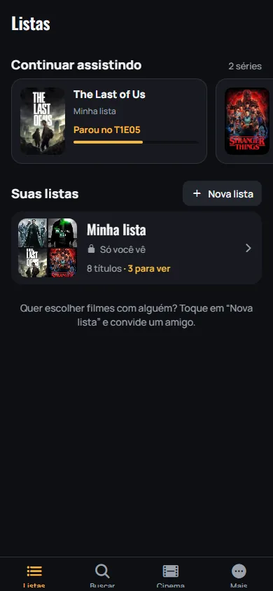
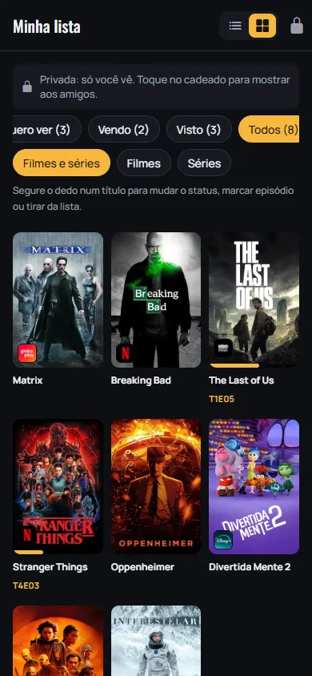
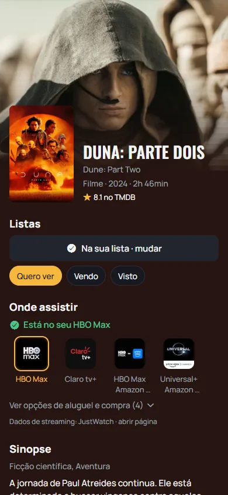
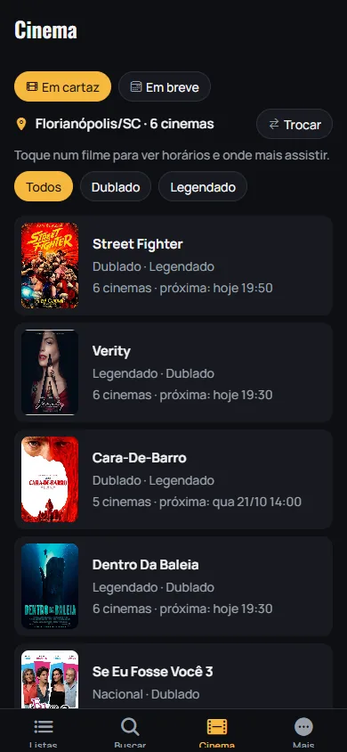

Sua lista de filmes e séries, sem esquecer nada
Guarde o que quer ver, descubra em qual streaming está e veja os horários dos cinemas perto de você.
Minha lista
Quero ver, Vendo e Visto, com nota e o episódio onde parou.
Onde assistir
Em qual streaming do Brasil cada título está.
Cinema
Horários perto de você, dublado ou legendado.
Como o app funciona
Telas reais do ListVer. Deslize para o lado.
-

1 Guarde tudo num lugar
Indicaram um filme? Busque e toque em +. As séries que você está vendo aparecem em “Continuar assistindo”.
-

2 Organize do seu jeito
Separe em Quero ver, Vendo e Visto. A lista é privada; abra o cadeado só se quiser mostrar aos amigos.
-

3 Saiba onde assistir
Cada título mostra em qual streaming está no Brasil e destaca os que você assina.
-

4 Veja o que passa no cinema
Use sua localização ou escolha a cidade: aparecem os cinemas perto e os próximos horários.
Baixar e testar
Baixar o ListVer (Android)Grátis. Arquivo de cerca de 120 MB: use o Wi-Fi se puder.
- Toque em Baixar o ListVer e confirme o download, se o navegador perguntar.
- Quando terminar, toque no arquivo baixado e depois em Instalar. Se o Android pedir, permita instalar a partir do navegador.
- Abra o app e crie sua conta com e-mail ou com o Google.
Se aparecer o aviso do Google Play Protect, toque em “Mais detalhes” e em “Instalar mesmo assim”. Isso acontece com qualquer app que não vem da Play Store. As próximas melhorias chegam sozinhas, sem baixar de novo.
Sua opinião faz o app
O ListVer está em teste. Tem uma ideia? No app, vá em Mais → Dar uma sugestão. Achou um erro? Mais → Falar com o suporte. Toda mensagem é lida.